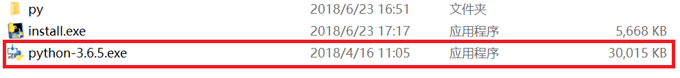
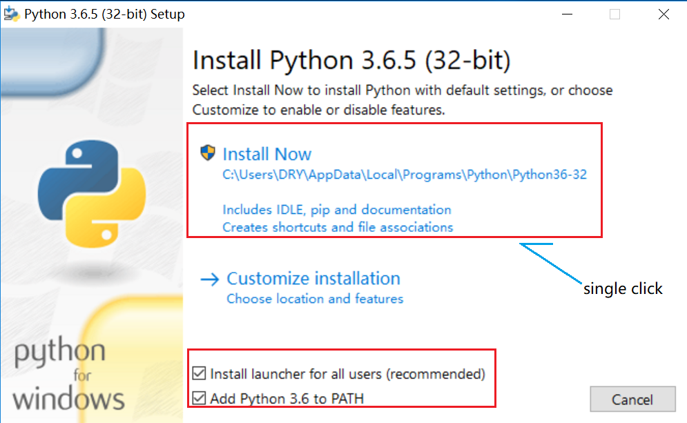
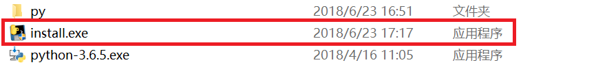
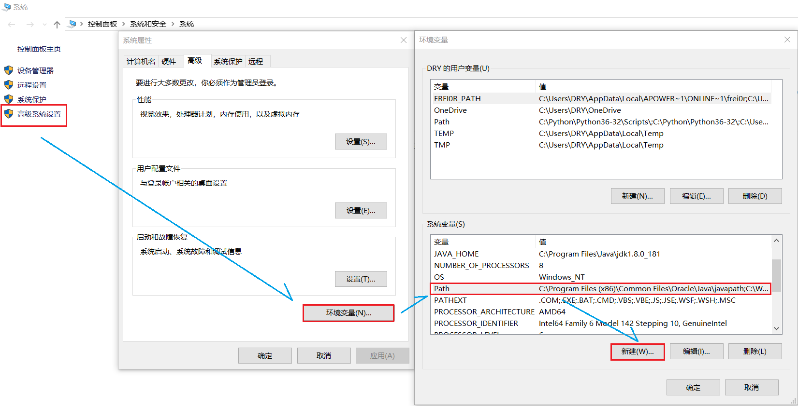
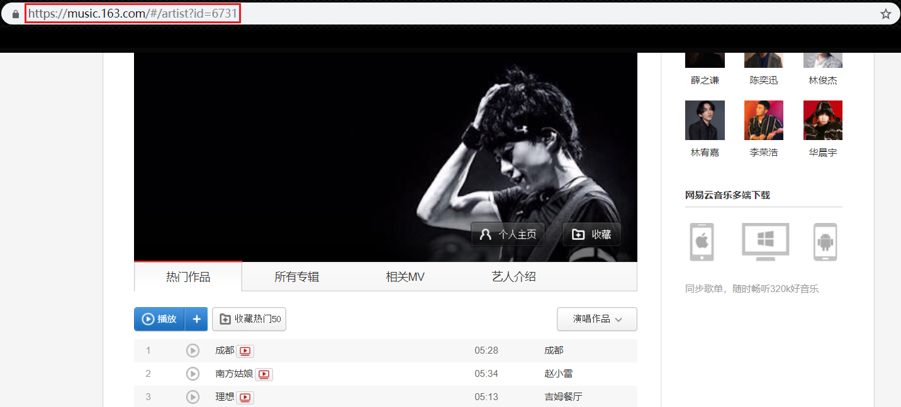

（零）下载get-tool
先放上get-tool安装包链接,自行下载解压到合适的位置
（一）安装python-3环境
若您的Windows无python-3环境，请先安装python-3.已有该环境的用户可直接跳到（二）
特附上python-3.6.5安装包下载链接，请自行下载到合适位置
1. 安装python

2. 勾选方式如图

3. 等待……

4. OK 关闭安装向导
5. 检验python是否正确安装

（二）安装所依赖的模块
1. 双击目录下的install.exe

2. 按照提示复制[ ]内的必要的信息

3. 添加环境变量（1）

4. 添加环境变量（2）

（三）使用
1. 打开命令行的三种方法（任选其一,推荐第一种）
- win+X 弹出menu后键入 A
- win+R 然后输入 cmd
- win+X 弹出menu后键入 C

2. 命令行中输入 get-more 获取用法

3. 使用效果大概这样

4. 可使用的网址如下
全民K歌 歌手URL 批量下载
全民K歌 歌曲URL 单曲下载

网易云音乐 歌曲URL 单曲下载

网易云音乐 歌手URL 批量下载

QQ音乐 歌手URL 批量下载

QQ音乐 歌曲URL 单曲下载

bilibili


youku

（四）其他
- 谁适合使用get-tool？如果你是反产权人士，开源软件响应者或黑客精神推崇者，那么别错过他
三家热门网站的音乐单曲与批量下载功能是笔者原创，视频下载功能的贡献来自github的开源项目you-get,同时也是笔者灵感的来源与效法的对象
使用过程中出现任何bug欢迎反馈，邮箱如下
- 强烈建议将Windows shell（或命令提示窗口）设置为黑底绿字，绿屏效应还是很酷的
本软件仅供python网络爬虫初学者入门学习借鉴之用，不得用于任何商业用途，不得传播盗版资源，不得侵犯持有版权的公司和创作者的任何利益……